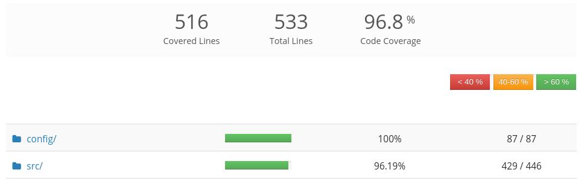
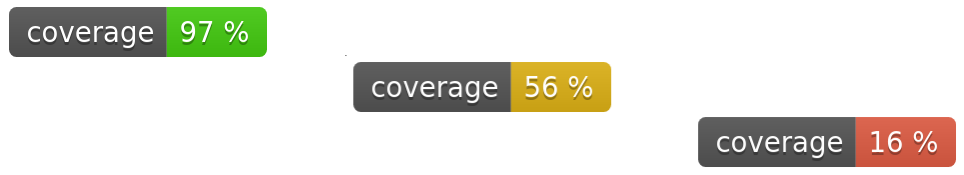
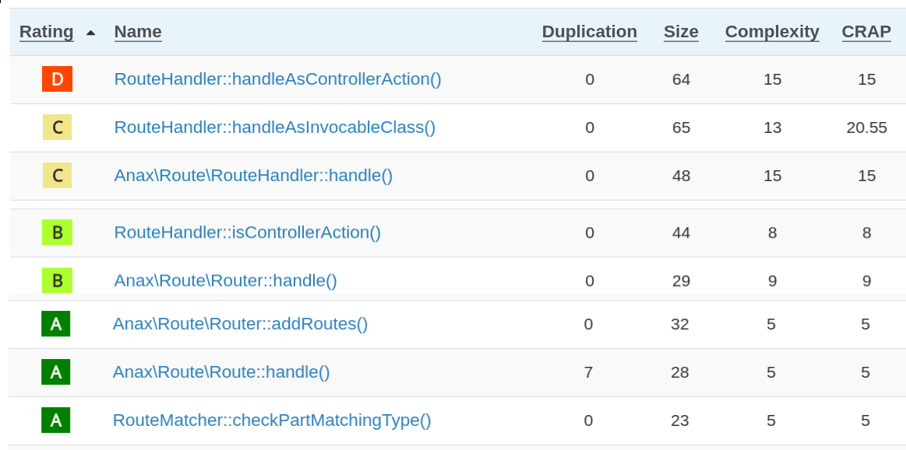
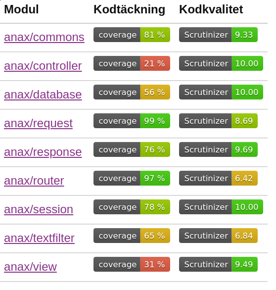
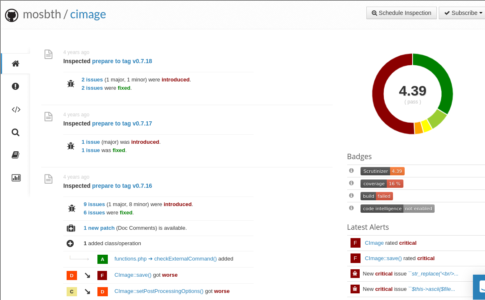

<!doctype html>
<html class="theme-5">
<meta charset="utf-8" />
<link href="../html-slideshow.bundle.min.css" rel="stylesheet" />
<link href="../style.css" rel="stylesheet" />
<script src="https://dbwebb.se/cdn/js/html-slideshow_v1.1.0.bundle.min.js"></script>

<title>Static code analysis</title>

<script data-role="slide" type="text/html" data-markdown class="titlepage center">
# Static code analysis
## Software quality metrics of code
### Mikael Roos
</script>


<script data-role="slide" type="text/html" data-markdown>
# Agenda

* Good and clean code
* Code quality
* Can code quality be visualized?
* Software quality metrics
* Validation tools

</script>


<script data-role="slide" type="text/html" data-markdown class="titlepage center">
# Can code quality be visualized?
## Can good code be measured?

Good and clean code - perhaps there is a way to work with it?
</script>


<script data-role="slide" type="text/html" data-markdown class="center">
# Badges

<figure>

<figcaption>Badges show status from processing of validation tools.<br>Example from a project available on GitHub.</figcaption>
</figure>

</script>


<script data-role="slide" type="text/html" data-markdown class="center">
# Build passed

<figure>

<figcaption>The build passed, is that a quality measure?<br>What does the badges really indicate?<br>What is the context of the badge?</figcaption>
</figure>

</script>


<script data-role="slide" type="text/html" data-markdown class="center">
# Build passed/failed

<figure>

<figcaption>The build passed or the build failed - which is best and does it indicate some quality measure of the code?</figcaption>
</figure>

</script>


<script data-role="slide" type="text/html" data-markdown>
# Reasonable Doubt

> **Beyond a reasonable doubt** is the traditional, and highest, standard of proof that must be exceeded to secure a guilty verdict in a criminal case in a court of law.

> **Clear and convincing evidence** is somewhat less rigorous as it requires that a judge or jury be persuaded.

> **A preponderance of the evidence** is the least rigorous standard as it requires only that one party's case be more persuasive.

</script>


<script data-role="slide" type="text/html" data-markdown class="center">
# Code rating badge

<figure>

<figcaption>A badge saying the grade of goodness of the code.<br>Can we relate to the figure?</figcaption>
</figure>

</script>


<script data-role="slide" type="text/html" data-markdown class="center">
# Red, yellow, green?

<figure>

<figcaption>Which would you choose to represent your code?<br>Do you feel it relates somewhat to code quality?</figcaption>
</figure>

</script>


<script data-role="slide" type="text/html" data-markdown class="center">
# Code rating details

<figure>

<figcaption>Rate the code where 10 is flawless and 1 is not so good. Colors help to visualize code parts separate rating. Example from Scrutinizer.</figcaption>
</figure>

</script>


<script data-role="slide" type="text/html" data-markdown class="center">
# Code rating compare

<figure>

<figcaption>Compare projects code rating, what can be said about these?</figcaption>
</figure>

</script>


<script data-role="slide" type="text/html" data-markdown class="center">
# Grade code parts

<figure>

<figcaption>Each class and method gets graded. Example from Scrutinizer.</figcaption>
</figure>

</script>


<script data-role="slide" type="text/html" data-markdown class="titlepage center">
# How about visualize code coverage as a quality measure?
</script>


<script data-role="slide" type="text/html" data-markdown class="center">
# Code coverage, badge

<figure>

<figcaption>A badge saying how well the tests cover the code.<br>Can we relate to the figure?<br>Does it say something about code quality?</figcaption>
</figure>

</script>


<script data-role="slide" type="text/html" data-markdown class="center">
# Code coverage, parts

<figure>

<figcaption>Code coverage from tests, broken down and visualized.</figcaption>
</figure>

</script>


<script data-role="slide" type="text/html" data-markdown class="center">
# Coverage by class/method

<figure>

<figcaption>Break down coverage by class and methods, compare with size and CRAP score. Where are the critical parts in the code? Does this imply quality?</figcaption>
</figure>

</script>


<script data-role="slide" type="text/html" data-markdown class="center">
# Code coverage compare

<figure>

<figcaption>Code coverage from different projects.<br>Which project is yours?<br>Does it hint something about software quality?</figcaption>
</figure>

</script>


<script data-role="slide" type="text/html" data-markdown class="center">
# Grades by class

<figure>

<figcaption>Grading the classes.<br>Metrics for coupling, cohesion, size, complexity, coverage.<br>Are these indicators of code quality?</figcaption>
</figure>

</script>


<script data-role="slide" type="text/html" data-markdown class="center">
# Grades by method

<figure>

<figcaption>Grading the methods.<br>Metrics for duplication, size, complexity, CRAP.<br>Are these indicators of code quality?</figcaption>
</figure>

</script>


<script data-role="slide" type="text/html" data-markdown class="titlepage center">
# Software metrics
## Indicators of software quality?

Good metrics could mean good and clean code, or?<br>At leasts - indicate good code?
</script>


<script data-role="slide" data-markdown type="text/html">
# Metrics by method

* Duplication
* Size
* Complexity
* CRAP score
* (Test coverage)

</script>


<script data-role="slide" data-markdown type="text/html">
# Metrics by class

* Coupling
* Cohesion
* Size
* Complexity
* Test coverage

</script>


<script data-role="slide" data-markdown type="text/html">
# Metrics

* Size
* Duplication
* Coupling
* Cohesion
* Complexity
* CRAP score
* Test coverage

</script>


<script data-role="slide" data-markdown type="text/html">
# Size overall

```
Lines of Code (LOC)                             1522
Comment Lines of Code (CLOC)                     506 (33.25%)
Non-Comment Lines of Code (NCLOC)               1016 (66.75%)
Logical Lines of Code (LLOC)                     267 (17.54%)
```

<p class="footnote">LOC/SLOC is typically used to predict the amount of effort that will be required to develop a program, as well as to estimate programming productivity or maintainability once the software is produced.</p>

</script>


<script data-role="slide" data-markdown type="text/html">
# Size overall...

```
/* Now how many lines of code is this? */
for (i = 0; i < 100; i++)
{
    printf("hello");
}
```

<p class="footnote">4 physical lines of code (LOC). 2 logical lines of code (LLOC). 1 comment line.</p>

</script>


<script data-role="slide" data-markdown type="text/html">
# Size by class/method

```
Logical Lines of Code (LLOC)                     267 (17.54%)
  Classes                                        267 (100.00%)
    Average Class Length                          33
      Minimum Class Length                         0
      Maximum Class Length                        93
    Average Method Length                          5
      Minimum Method Length                        1
      Maximum Method Length                       26
    Average Methods Per Class                      6
      Minimum Methods Per Class                    0
      Maximum Methods Per Class                   23
  Functions                                        0 (0.00%)
    Average Function Length                        0
  Not in classes or functions                      0 (0.00%)
```

</script>


<script data-role="slide" data-markdown type="text/html">
# Size by structure

```
Namespaces                                         2
Interfaces                                         0
Traits                                             0
Classes                                            8
  Abstract Classes                                 0 (0.00%)
  Concrete Classes                                 8 (100.00%)
    Final Classes                                  0 (0.00%)
    Non-Final Classes                              8 (100.00%)
Methods                                           49
  Scope
    Non-Static Methods                            49 (100.00%)
    Static Methods                                 0 (0.00%)
  Visibility
    Public Methods                                37 (75.51%)
    Protected Methods                              6 (12.24%)
    Private Methods                                6 (12.24%)
```

</script>


<script data-role="slide" data-markdown type="text/html">
# Size by structure...

```
Functions                                          0
  Named Functions                                  0 (0.00%)
  Anonymous Functions                              0 (0.00%)
Constants                                          2
  Global Constants                                 0 (0.00%)
  Class Constants                                  2 (100.00%)
    Public Constants                               2 (100.00%)
    Non-Public Constants                           0 (0.00%)
```

</script>


<script data-role="slide" data-markdown type="text/html">
# Duplication

> "Code Duplication is a software metric that indicates the amount of source code that occurs more than once in a program.

> Code Duplication is undesirable because it is associated with higher maintenance costs and can be indicative of bad design."

<p class="footnote">Read more on code duplication https://en.wikipedia.org/wiki/Duplicate_code</p>

</script>


<script data-role="slide" data-markdown type="text/html">
# Duplication...

* Code Duplication (LOC)
    * The number of lines that are part of a duplication.

* Code Duplication (%)
    * The number of lines that are duplicated as a percentage of the total number of lines.

</script>


<script data-role="slide" data-markdown type="text/html">
# Cohesion

* Degree to which the elements inside a module belong together
* A cohesive class performs one feature while a non-cohesive class performs two or more features.
* LCOM (Lack of Cohesive Methods)

> "The ideal value of this metric is 1 (high cohesion) meaning a class has only one responsibility (good) and value X means that a class has probably X responsibilities (bad)."

<p class="footnote">Read more on cohesion https://en.wikipedia.org/wiki/Cohesion_(computer_science)</p>

</script>


<script data-role="slide" type="text/html" data-markdown class="center">
# LCOM

<figure>

<figcaption>Dependency graph on the class relationships provides the value for LCOM.</figcaption>
</figure>

<p class="footnote">https://softwareengineering.stackexchange.com/questions/151004/are-there-metrics-for-cohesion-and-coupling</p>

</script>


<script data-role="slide" data-markdown type="text/html">
# Coupling

* Degree of interdependence between software modules; a measure of how closely connected two routines or modules are
* The strength of the relationships between modules

> "Generally, loose coupled classes and components are preferable as the higher your coupling, the higher are the chances that a class breaks or requires adaption because of changes in classes that it depends on."

<p class="footnote">https://en.wikipedia.org/wiki/Coupling_(computer_programming)</p>

</script>


<script data-role="slide" data-markdown type="text/html">
# Coupling metrics

* **Efferent coupling (Ce)** measures the number of classes on which a given class depends.
* **Afferent coupling (Ca)** measures how many classes depend on a given class.
* **Instability index Ce/(Ce+Ca)** is measures efferent coupling in relation to total coupling.
    * A value of 1 means it is highly unstable, and a value of 0 means it is stable.

<p class="footnote">https://en.wikipedia.org/wiki/Coupling_(computer_programming)</p>

</script>


<script data-role="slide" type="text/html" data-markdown>
# Low coupling, high cohesion

> "**Low coupling** is often a sign of a well-structured computer system and a good design, and when combined with<br>**high cohesion**, supports the general goals of high readability and maintainability."

</script>


<script data-role="slide" type="text/html" data-markdown>
# Complexity

* Cyclomatic complexity is a software metric used to indicate the complexity of a program
* Quantitative measure of the number of linearly independent paths through a program's source code
* If the source code contained no control flow statements (conditionals or decision points), the complexity would be 1

<p class="footnote">Read on https://en.wikipedia.org/wiki/Cyclomatic_complexity</p>

</script>


<script data-role="slide" type="text/html" data-markdown class="center">
# Complexity by graph

<figure>

<figcaption>Cyclomatic complexity is computed using the control flow graph of the program: the nodes of the graph correspond to indivisible groups of commands of a program, and a directed edge connects two nodes if the second command might be executed immediately after the first command. CC=3</figcaption>
</figure>

</script>


<script data-role="slide" type="text/html" data-markdown class="center">
# CC = 1

```
1   function example() {
        fiddle();
        fiddle();
        fiddle();
        return true;
    }
```

<p class="footnote">No decision points. Cyclomatic complexity = 1.</p>

</script>


<script data-role="slide" type="text/html" data-markdown class="center">
# CC = 7

```
1   function example() {
2       if ($a == $b) {
3           if ($a1 == $b1) {
                fiddle();
4           } elseif ($a2 == $b2) {
                fiddle();
            } else {
                fiddle();
            }
5       } elseif ($c == $d) {
6           while ($c == $d) {
                fiddle();
            }
7       } else {
```

<p class="footnote">6 decision points. Cyclomatic complexity = 1+6.</p>

</script>


<script data-role="slide" data-markdown type="text/html">
# CC by size

```
Cyclomatic Complexity
  Average Complexity per LLOC                     0.53
  Average Complexity per Class                   18.75
    Minimum Class Complexity                      1.00
    Maximum Class Complexity                     77.00
  Average Complexity per Method                   3.90
    Minimum Method Complexity                     1.00
    Maximum Method Complexity                    19.00
```

</script>


<script data-role="slide" data-markdown type="text/html">
# CC guideline

> "Cyclomatic Complexity of a module should not exceed 10."

> "Split into smaller modules whenever the cyclomatic complexity of the module exceeded 10."

> "For each module, either limit cyclomatic complexity to [the agreed-upon limit] or provide a written explanation of why the limit was exceeded."

<p class="footnote">By McCabe https://en.wikipedia.org/wiki/Cyclomatic_complexity</p>

</script>


<script data-role="slide" type="text/html" data-markdown>
# CRAP score

* Change Risk Analyzer and Predictor (Change Risk Anti Pattern)

> "An estimate of the amount of work required to address crappy methods.

> It takes into account the amount of testing (with a small refactoring component) required for bringing a crappy method back into non-CRAP territory.

> Broadly speaking, a CRAP load of N indicates that you have to write N tests to bring the project below the acceptable CRAP threshold. "

<p class="footnote">Savoia at https://www.artima.com/weblogs/viewpost.jsp?thread=215899</p>

</script>


<script data-role="slide" type="text/html" data-markdown class="center">
# CRAP versus coverage

<figure>

<figcaption>A CRAP score of 30 as the threshold for crappiness.<br>You can have high-complexity methods BUT you better have a lot of tests for them.</figcaption>
</figure>

</script>


<script data-role="slide" type="text/html" data-markdown>
# Halstead complexity measures

* Program vocabulary
* Program length
* Calculated program length
* Volume
* Difficulty
* Effort
* Time required to program
* Number of delivered bugs

<p class="footnote">Read on https://en.wikipedia.org/wiki/Halstead_complexity_measures</p>

</script>


<script data-role="slide" type="text/html" data-markdown>
# Maintainability index

* Measures how maintainable (easy to support and change) the source code is
* 0-100 where green rating is between 20 and 100
* Formula
    * Halstead Volume
    * Cyclomatic Complexity
    * Source Lines of Code (SLOC)
    * Percent of comment lines

<p class="footnote">Visual Studio https://docs.microsoft.com/en-us/visualstudio/code-quality/code-metrics-values?view=vs-2019</p>

</script>


<script data-role="slide" type="text/html" data-markdown class="titlepage center">
# A lot of metrics
## But how to produce them?
</script>


<script data-role="slide" type="text/html" data-markdown>
# Lets make it

* `make test`
* `make lint`
* `make metrics`

</script>


<script data-role="slide" type="text/html" data-markdown>
# Code standard

* `make cs`
* Follow a code standard
* Use tools to verify it is followed
    * phpcs, pylint, flake8, eslint, jscs

</script>


<script data-role="slide" type="text/html" data-markdown>
# Lint and mess detector

* `make lint`
* Flag programming errors, bugs, stylistic errors, and suspicious constructs
* Static analyse (no execute)
* Tools like phpmd, phpstan, pylint, flake8, eslint
* Copy Paste Detector, cpd, phpcpd

</script>


<script data-role="slide" data-markdown type="text/html">
# Mess detector?

* Possible bugs - empty try/catch/finally/switch statements
* Dead code - unused local variables, parameters and private methods
* Suboptimal code - wasteful String/StringBuffer usage
* Overcomplicated expressions - unnecessary if statements, for loops that could be while loops
* Duplicate code - copied/pasted code means copied/pasted bugs

</script>


<script data-role="slide" type="text/html" data-markdown>
# Code metrics

* `make metric`
* Cyclomatic complexity
* Coupling
* Cohesion
* Halstead metrics
* Maintainability index

* Tools can generate reports (phploc, radon, ...)

</script>


<script data-role="slide" type="text/html" data-markdown>
# Test and coverage

* `make test`
* Generate metrics on your tests and code coverage

</script>


<script data-role="slide" data-markdown type="text/html">
# Use and visualize

* Use the tools as an integrated part in your editor
    * Plugins exists for each tool
    * Validate your code while coding
* Use as part in automated build and test
* Use external build services to generate reports
    * Like Travis and Scrutnizer
* Show off your badges

</script>


<script data-role="slide" type="text/html" data-markdown class="center">
# No shoot the messenger

<figure>

<figcaption>Listen to the advices from the linters and mess detectors. Do not blaim the messenger.</figcaption>
</figure>

</script>


<script data-role="slide" type="text/html" data-markdown class="titlepage center">
# Sum it up
</script>


<script data-role="slide" type="text/html" data-markdown class="center">
# Badges

<figure>

<figcaption>So - might badges provide an indication of good and clean code and perhaps software quality?</figcaption>
</figure>

</script>


<script data-role="slide" type="text/html" data-markdown class="center">
# anax/database

<figure>

<figcaption>It's a 10. Nothing to see, just move on, or?<br>https://scrutinizer-ci.com/g/canax/database/</figcaption>
</figure>

</script>


<script data-role="slide" type="text/html" data-markdown class="center">
# anax/router

<figure>

<figcaption>Code metrics visualized for a software module.<br>https://scrutinizer-ci.com/g/canax/router/</figcaption>
</figure>

</script>


<script data-role="slide" type="text/html" data-markdown class="center">
# mos/cimage

<figure>

<figcaption>Seems to be a lot of red here... still this software is spread and widely used.<br>https://scrutinizer-ci.com/g/mosbth/cimage/</figcaption>
</figure>

</script>


<script data-role="slide" type="text/html" data-markdown>
# Industry matters

* Some use, some do not (like usually - it depends)
* An indicator of the maturity level of the development organisation
* Each new tool takes some time to implement, adjust and understand
* Popular "work flow" or "build piplines"
    * (git, github, build services, quality services)
* Each programmer should choose to use on their own, its an easy thing to get going and might provide high value of return

</script>


<script data-role="slide" type="text/html" data-markdown>
# Research matters

* Code quality issues in student programs
* Code quality analysis in open source software development
* Using (bio) metrics to predict code quality online
* A large scale study of programming languages and code quality in github
* Is external code quality correlated with programming experience or feelgood factor?

<p class="footnote">Some research papers on code quality based an metrics.</p>

</script>


<script data-role="slide" type="text/html" data-markdown class="titlepage center">
# The end
</script>


<script data-role="slide" type="text/html" data-markdown>
</script>

</html>
